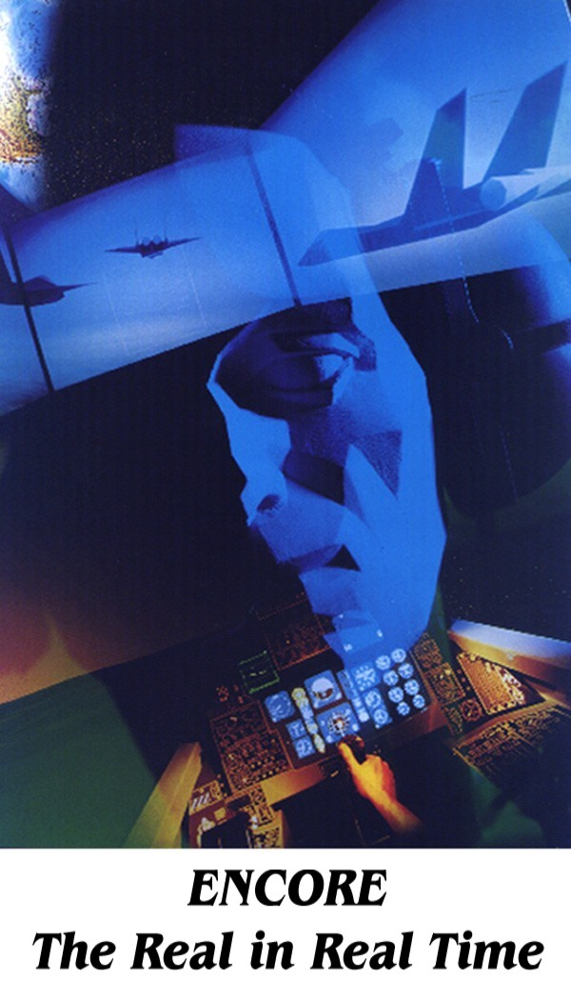

|  |
He is the Editor-in-Chief of User Modeling and User-Adapted Interaction. . Adaptive Web-based systems maintain a model of the goals, interests, preferences and knowledge of the individual user and apply this throughout the interaction for adaptation to the needs of that user. The Second Workshop on Adaptive Systems and User Modeling on the World Wide Web (WWW) aims to bring together researchers and practitioners from various areas working on user modeling and adaptive systems on the Web. At each of the sessions the number of participants was limited to 25-30 in order to encourage participation in workshop discussions. |